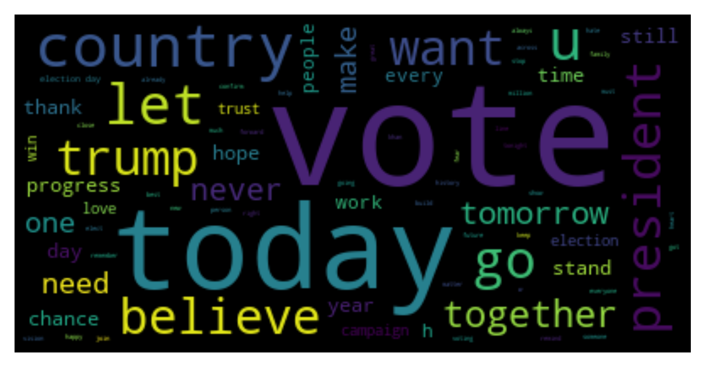

Data Gathering Introduction
I collect many kinds of data from different sources including US government website, Twitter api, and Trump supporter website. In the next part I will focus on them one by one.
Twitter text data of Trump competitor —— Hillary
I got Hillary tweets data from Twitter API with the allowance of the law. Due to some special restriction, I decided to choose October 2016 to February 2017 as the research window. Twitter API provides completed support for applicants so that I can use R and Python separately to get text data.
Python API
R API
Data Preview for Hillary Tweets(Word cloud and Topic model)

From this word cloud picture, we can find most of the words are about vote and time. It shows that Hillary tried to raise attention to the timing of the election.
This is LDA topic Model. I select 10 possible topic to show. Hillary used many vocabularies with strong action and words related to time. All of them are about family, time, action, vote. It's an interesting work but it's not out of expectation
Statistical data of president election in US from 1976 to 2020